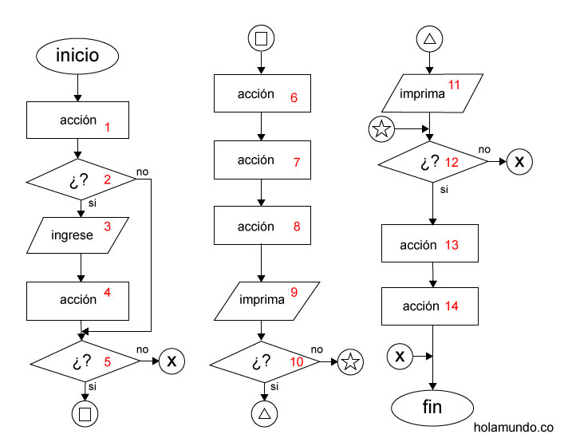
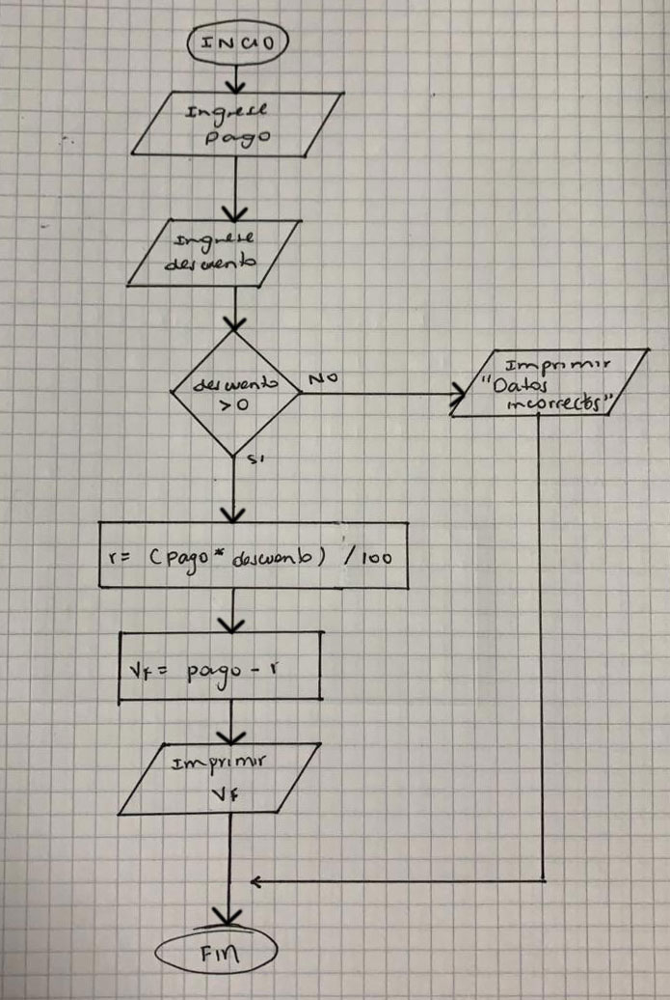
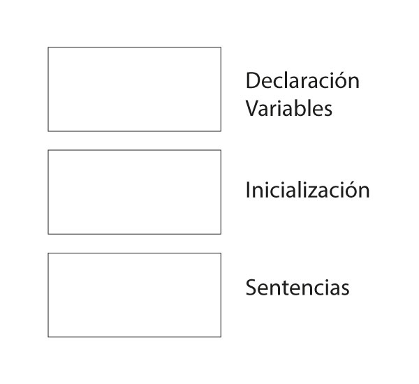

Taller estudio - Temas
- Pseudocódigo
- Diagramas de flujo
- Operaciones con variables
- Tipos de datos
- Operadores (relación, lógicos, aritmeticos, precedencia)
- Condiciones
- Teoría
- Ejercicios
Taller estudio
Este es un repaso de lo visto hasta el momento, algunos ejercicios se resolveran en clase, pero la mayoría de ejercicios es para que el estudiante emplee en su tiempo de trabajo autonomo para recordar los temas vistos, preparar la primera evaluación y para estudiar.
Recomiendo durante la clase, prestar atención a los ejercicios que el profesor resuelve y aprovechar a preguntar si algo no queda claro, ya que la idea de la clase en no llevarse dudas para la casa.
Taller estudio
Durante el estudio fuera de clase, tener presente llevar notas y si aparecen dudas o preguntas, escribir todo lo que pasa con el ejercicio, valores de las variables, casos especiales, funcionamientos extraños, etc. Para ser compartidas en el aula, esto es muy útil, ya que de esta forma podemos aprender de la experimentación de todos.
Pseudocodigo y diagramas de flujo
Primera parte, escriba el pseudocodigo y el diagrama de flujo, mínimo 30 pasos.
- Actividad sacar al perro a pasear
- Actividad montar en patines
- Actividad conseguir pareja
- Actividad pedir un domicilio
- Actividad canción Salchipapa y rock and roll
- Actividad canción Atún con pan
- Actividad Batalla musical Scott Pilgrim Vs The World
Flujos de un diagrama
En un diagrama debe ser posible ir del inicio al final, por varios caminos, escriba todos los posibles caminos del siguiente diagrama. ej: (1->2->3...->14)
Utilice los números para definir un camino
Ejemplo, pseudocodigo, diagrama y programa
Calcular el descuento de x por ciento de un valor.
Ejemplo Pseudocodigo, diagrama de flujo y programa
1. Inicio
2. Ingrese el valor inicial
3. Ingrese el descuento
4. Se múltiplica el valor inicial por el descuento dividido entre 100
5. Se almacena el resultado en variable resultado
6. Se le resta al valor inicial el resultado anterior y se guarda en valor final
7. Se imprime valor final
8. Fin
Contiene un error en la lógica. ¿Cuál es?
Ejemplo Pseudocodigo, diagrama de flujo y programa
1. Inicio
2. Ingrese el valor inicial
3. Ingrese el descuento
4. Si descuento > 0 ir a 5 sino ir a 9
5. Se múltiplica el valor inicial por el descuento dividido entre 100
6. Se almacena el resultado en variable resultado
7. Se le resta al valor inicial el resultado anterior y se guarda en valor final
8. Se imprime valor final ir a 10
9. Imprimir Error en los datos
10. Fin
Versión con un condicional y control de error de lógica
Ejemplo Pseudocodigo, diagrama de flujo y programa
Ejemplo Pseudocodigo, diagrama de flujo y programa
float pago,resultado,valor_final;
//Porque el descuento es exacto 10%, 30%, 45% ...
sbyte descuento;
pago = 1200;
//De la prueba de escritorio tenemos los valores 20 y -2
descuento = -20;
if(descuento > 0)
{
resultado = pago*descuento/100;
valor_final = pago - resultado;
Console.WriteLine(valor_final);
}
else
{
Console.WriteLine("Datos incorrectos");
}
/*
// Primera versión sin feedback al entrar datos incorrectos
if(descuento > 0)
{
resultado = pago*descuento/100;
valor_final = pago - resultado;
Console.WriteLine(valor_final);
}*/
Pseudocodigo, diagrama de flujo y programa
-
Calcular el valor de una factura, si el valor a pagar es mayor a 500 US, se le descuenta el 15% y menor a 700 US, si es mayor a 700 y menor a 1250US US se le descuenta el 25%. Luego del descuento se calcula el impuesto del 8%, si el valor a pagar es menor a 30 US, no se le cobra impuesto. Al final imprima el valor a pagar con el siguiente formato como muestra el ejemplo:
Subtotal: $ 534 US
Descuento: $ 80,1 US
Impuesto: $ 42,72 US
Total: $ 496,62 US
Pseudocodigo, diagrama de flujo y programa
-
Calcular el área de las siguientes figuras:
1. triángulo, 2. cuadrado, 3. trapecio.
Se selecciona que operación se realiza, teniendo en cuenta el valor de una variable. ej: Si la variable vale 2, se calcula el área del cuadrado. Solo se ejecutan las sentencias para un área que depende de la opción. Tenga en cuenta el control de errores.
* No es necesario pedir valores al usuario, ya que no sabemos como se piden los datos, por tanto se almacena el valor en una variable, al ejecutar el programa se cambia este valor. El ejercicio es un solo programa, y se realiza solo un calculo por ejecución, NO se calculan todas las áreas.
Calcular el valor de la i
Prueba de escritorio, calcule el valor de la i. (Click en la imagen para agrandar)

Calcular el valor de la i

Calcular el valor de la i

Calcular el valor de la i

Prueba de escritorio
Validar el pseudocodigo, escribir el diagrama y realizar la prueba de escritorio

Prueba de escritorio

Prueba de escritorio

Prueba de escritorio

Prueba de escritorio

Prueba de escritorio

Operaciones con variables
Recuerde que hay dos operaciones importantes para usar con variables, declarar la variable e inicializar la variable.
- Declare 4 variables númericas, de diferente tipo
- Asigne valores compatibles de otro tipo a una variable, por ejemplo a un double asigne un int.
- Realice una lista de 20 de tipos de dato diferente que se pueden usar como datos primitivos en C#
- ¿Para que sirve el operador signación?, ¿Cómo se usa correctamente?
Por el momento nos enfocamos en los tipos de datos primitivos, consulte la documentación aquí
Operaciones con variables
El desbordamiento es un error que se presenta cuando una variable supera su capacidad, recuerde que las variables no pueden guardar datos infinitos, ya que la memoría del programa es limitada, además es importante hacer un uso correcto del espacio para lograr crear programas eficientes y con un buen desempeño.
¿Qué pasa con la siguiente sentencia?
sbyte x = 127 + 1;
Realice pruebas similares con otros tipos de variables.
Escritura de código
Luego de hacer el pseudocódigo y el diagramas de flujo de una necesidad específica y ya tenemos el algoritmo del programa claro, es importante realizar la prueba de escritorio para validar casos especiales y posibles errores lógicos y de tiempo de ejecución.
Estructura recomendada de un programa
- Como recomendación, se espera que al principio del programa se declaren las variables, esto permite tener un solo lugar donde se define el inventario de variables con sus respectivos tipos que se usarán.
- Luego se inicializan las variables con un valor inicial, que depende de la solución.
ej. float vel = 2.5f; - Por último se escriben las sentencias, es decir las diferentes instrucciones que hacen parte del programa.
ej. c =a+b;
Estructura recomendada de un programa
Buenas prácticas
Recuerde identar, para esto se usa la tecla tabulador (tab)
Ubicada en la parte izquierda del teclado.

Buenas prácticas
Cree variables nemotécnicas, es decir que tengan implícito su significado.
int numero_vidas=3; 👌
float xyze = 1f; 😲👎💩
Buenas prácticas
Escribir código C#
Realice el pseudocódigo, el diagrama y el código de un programa que:
- Sume 4 números
- Calcule el promedio de 8 números
- Imprima mayor si el número en una variable es mayor a cero o menor en caso contrario
Teoría
- ¿Qué es una condición?
- ¿Qué es una variable?
- ¿Qué es un operador de relación?
- ¿Qué es un operador binario?
- ¿Qúe es un comentario?
Teoría
- ¿Qué es un error lógico?
- ¿Qué es un error de sintaxis?
- ¿Qué es un error en tiempo de ejecución?
- ¿Qué es desbordamiento?, ¿Por qué se presenta?
- ¿Por qué es importante la prioridad de ejecución en un algoritmo?
Estructuras de control
- ¿Qué es una condición?
- Feeback al usuario
- If anidados
- Switch
- Operador ternario
Soluciones
//base es reservada, no usar l, porque parece 1
float base_triangulo = 2, altura_triangulo = 3, lado = 5;
sbyte opcion = 1;
if(opcion == 1)
{
Console.WriteLine("EL area del triangulo es = "+(base_triangulo*altura_triangulo)/2);
}
else
{
if(opcion == 2)
{
Console.WriteLine("EL area del cuadro es"+(lado*lado));
}
else{
//Acá se calcula el área del trapecio y se muestra mensaje error en caso que la opcion no sea 3
}
}
Ejecutar código